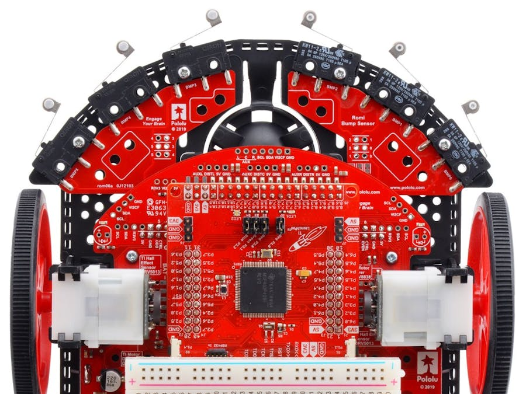

Technical Team Member
Working with a multidisciplinary team, I contributed to the design, programming, and troubleshooting of robotic systems using the TI RSLK kit. I helped manage workflow and coordinated responsibilities to meet deadlines, while also presenting our findings to instructors and peers. This project strengthened both my technical problem‑solving and communication skills.
